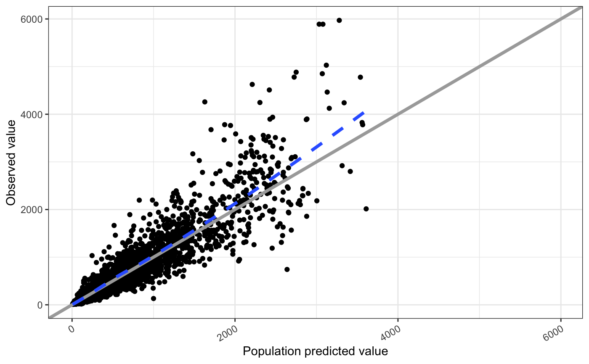

rot_x.RdRotate axis text
rot_x(angle = 30, hjust = 1, vjust = NULL, vertical = FALSE, ...) rot_y(angle = 30, hjust = 1, vjust = NULL, ...)
| angle | passed to ggplot2::element_text |
|---|---|
| hjust | passed to ggplot2::element_text |
| vjust | passed to ggplot2::element_text |
| vertical | if |
| ... | pased to ggplot2::element_text |
If x-axis tick labels do not have enough space, consider using
vert = TRUE. By default, the tick labels will be justified up to the
x-axis line. Use hjust = "b" or hjust = "bottom" (with vert = TRUE)
to justify the axis labels toward the bottom margin of the plot.
#>